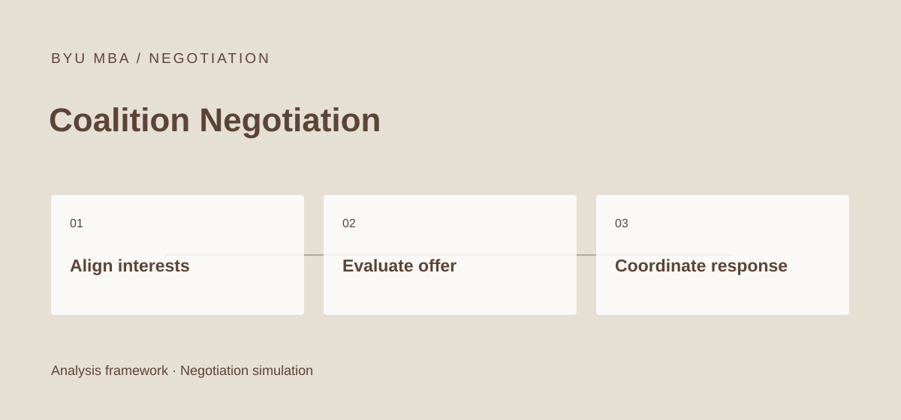

Negotiation simulation · 2026
Coalition Negotiation: Mouse
A multi-party classroom negotiation in which I represented one of several mayors. The exercise required our group to coordinate internally while negotiating with another side.
- My role
- Participant representing a mayor
- Year
- 2026
- Work type
- Negotiation simulation
- Focus
- Coalition building · Stakeholder alignment

My contribution
I helped clarify the broader objectives and asked questions to keep the group aligned. When we received an acceptable first offer, I supported an internal discussion about whether we could seek better terms before committing.
Analysis
Our collective position depended on coordination. Accepting a proposal individually could weaken the group, while a shared position gave us a stronger basis for continuing the discussion. Internal communication was part of the negotiation itself.
Analysis summary
| Stage | My focus | Negotiation value |
|---|---|---|
| Internal preparation | Clarify shared objectives | Develop a common position |
| Offer evaluation | Discuss terms as a group | Avoid premature individual acceptance |
| Response | Coordinate the next request | Maintain collective leverage |
Framework summarized from my preparation, analysis, and reflection.
Outcome and feedback
Peer feedback identified my questions, support for the group, and attention to the overall situation as useful contributions. The reflection also recorded that our internal discussion helped the group pursue a better agreement.
What I learned
A coalition needs more than shared interests. Participants need a clear process for comparing offers, resolving differences, and deciding what to communicate together.